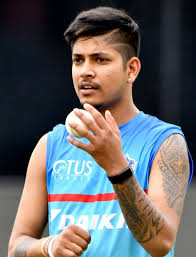

SANDIP LAMICHHANE

Sandeep Lamichhane was born on 2 August 2000 in Aruchar,Syanja,Nepal.He is now aged 19 years.His batting style is right-handed.ahais bowling style is a leg break googly.He is in Dehli Capitals.
He is a Nepalese cricketer who plays for the Nepalese National team.A right-arm leg spin bowler,Lamichhane has played for 20 franchise sides across the world,including the Delhi Capitals in the IPL,the Melbourne stars in the BBL and the lahore qalanders in the PSL.